DeeAsh Fit Score
ประเมินความเป็นไปได้ที่ผู้ตอบแบบสอบถามจะอยู่ในกลุ่มเคยใช้แชมพูปิดผมขาว จากข้อมูล demographic และพฤติกรรมพื้นฐาน
DeeAsh Insight Studio
รวมผลทำนายโอกาสการใช้แชมพูปิดผมขาว การแบ่งกลุ่มลูกค้า และข้อเสนอเชิงธุรกิจ เพื่อช่วยวางแผนการสื่อสารของ DeeAsh ให้แม่นยำขึ้น
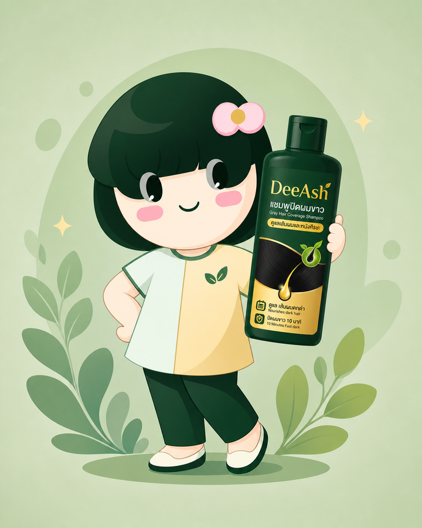
ประเมินความเป็นไปได้ที่ผู้ตอบแบบสอบถามจะอยู่ในกลุ่มเคยใช้แชมพูปิดผมขาว จากข้อมูล demographic และพฤติกรรมพื้นฐาน
ใช้ K-Means แบ่งลูกค้าเป็น Confidence Seeker และ Budget-Smart Buyer เพื่อสร้าง persona และกลยุทธ์แคมเปญ
แปลงผลโมเดลเป็น message, channel, creative direction และแนวทางวัดผลสำหรับการตลาดจริง
Supervised Learning
ส่วนนี้ใช้โมเดลจำแนกกลุ่มลูกค้าที่มีแนวโน้ม “เคยใช้แชมพูปิดผมขาว” เพื่อช่วยอ่านสัญญาณความพร้อมซื้อ
สรุปผล Train/Test แบบกระชับ เพื่อเลือกโมเดลที่เหมาะกับข้อมูล DeeAsh
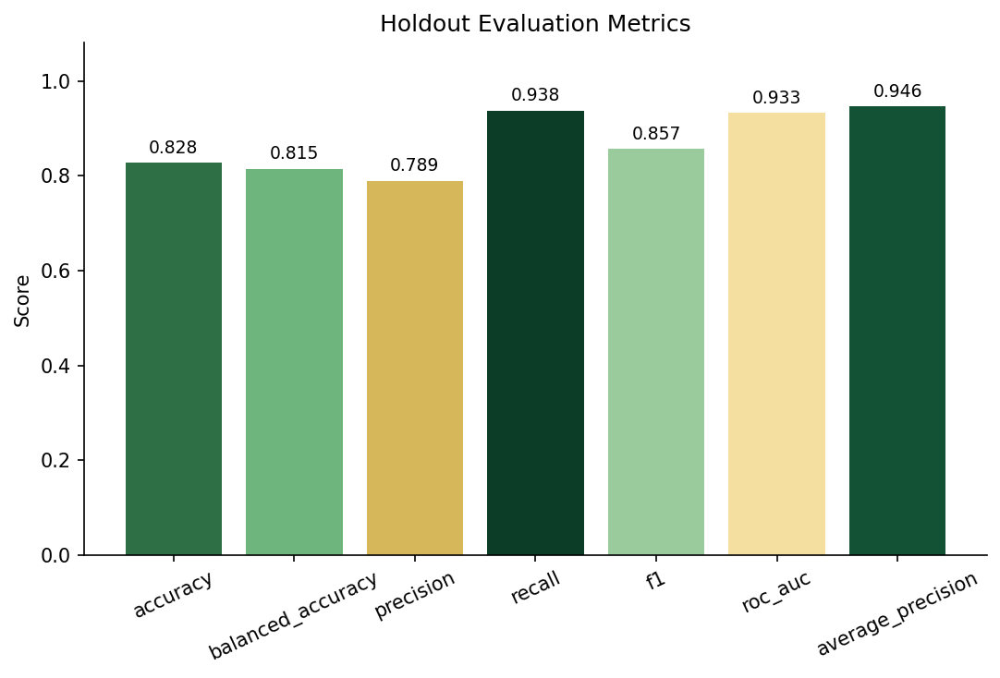
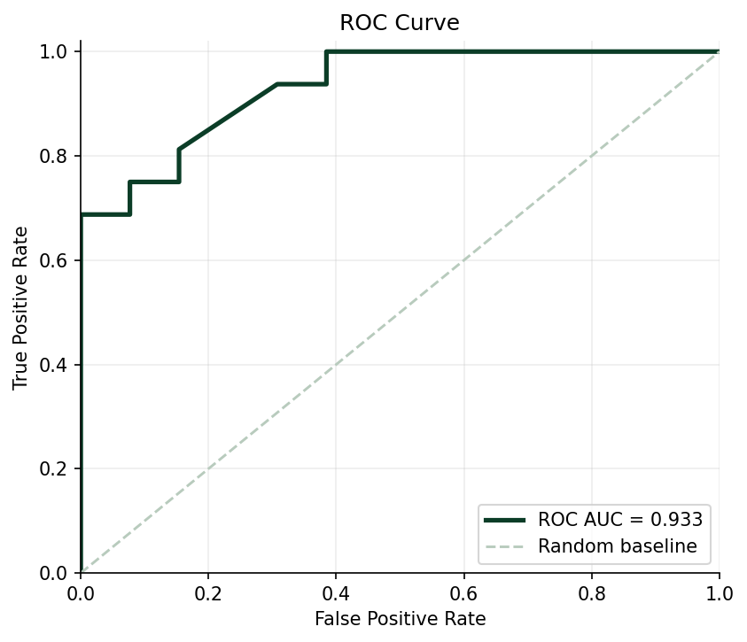
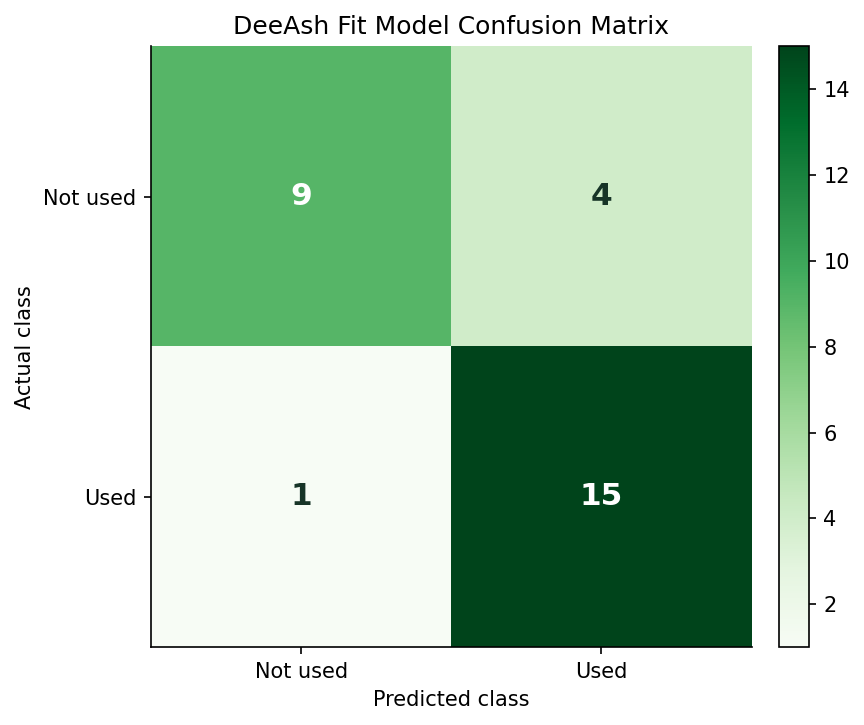
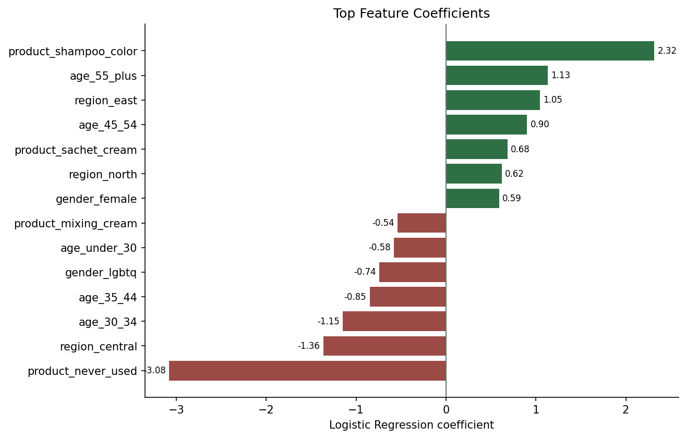
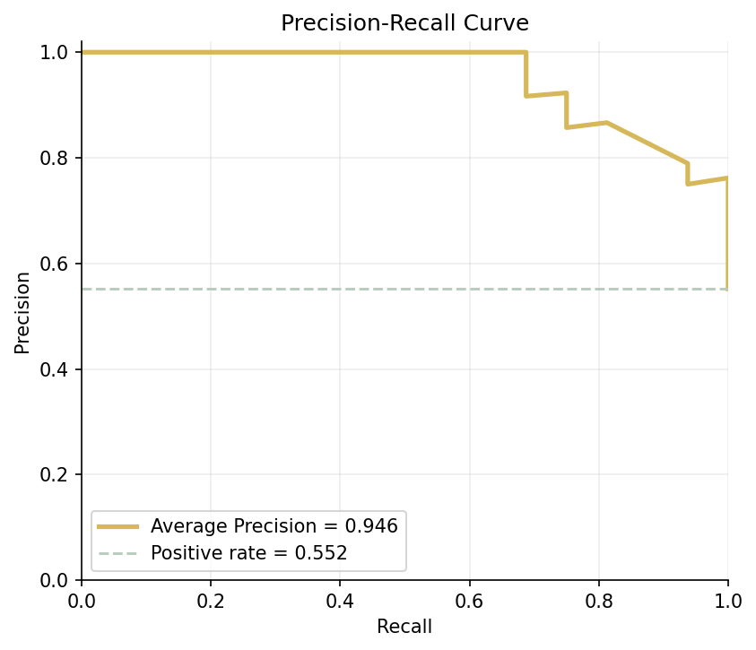
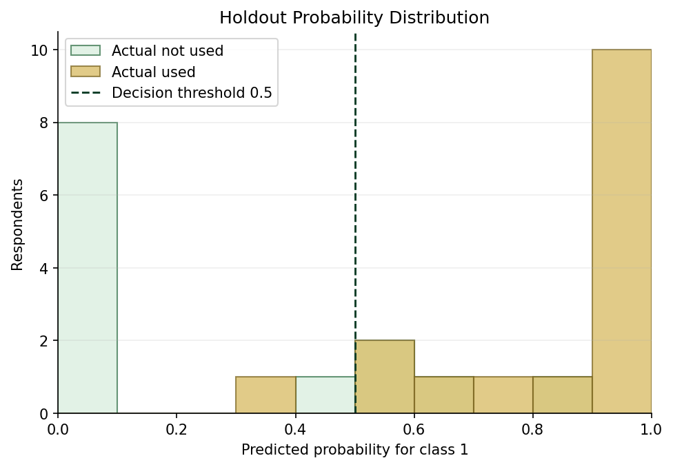
Unsupervised Learning
K-Means แนะนำ K=2 เพื่อให้กลุ่มมีขนาดใช้งานเชิงธุรกิจได้ และตีความเป็น persona สำหรับวางแคมเปญได้จริง
วิเคราะห์พฤติกรรมและแบ่งกลุ่มลูกค้าด้วย K-Means Clustering และ PCA
ลดมิติข้อมูลเพื่อแสดงภาพรวมการแบ่งกลุ่มลูกค้า
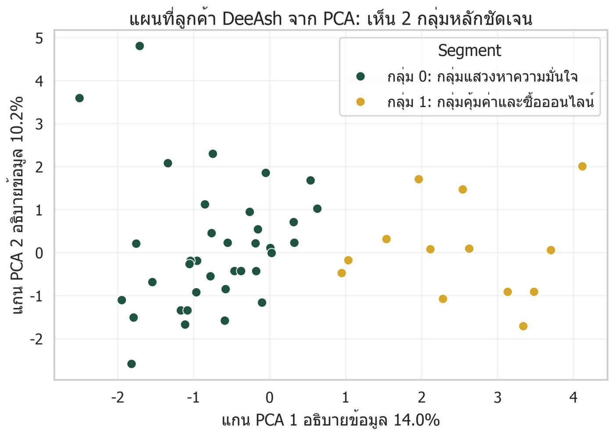
จากกลุ่มตัวอย่างสำหรับ Unsupervised ML แบ่งด้วย K-Means
ลักษณะเด่นและพฤติกรรมของลูกค้าในแต่ละ Cluster
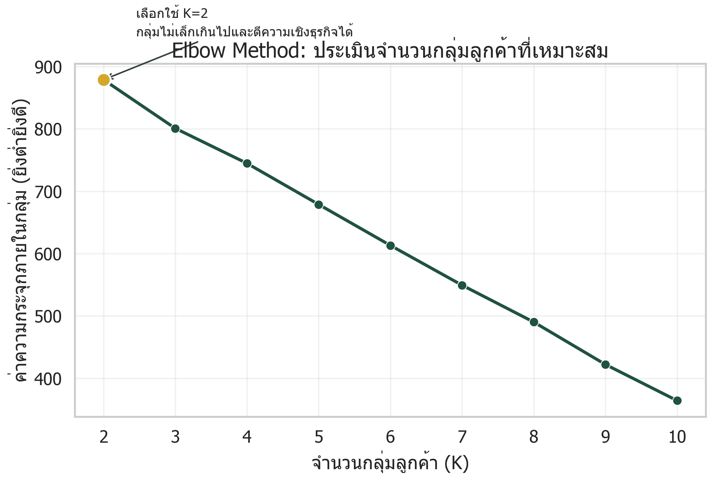
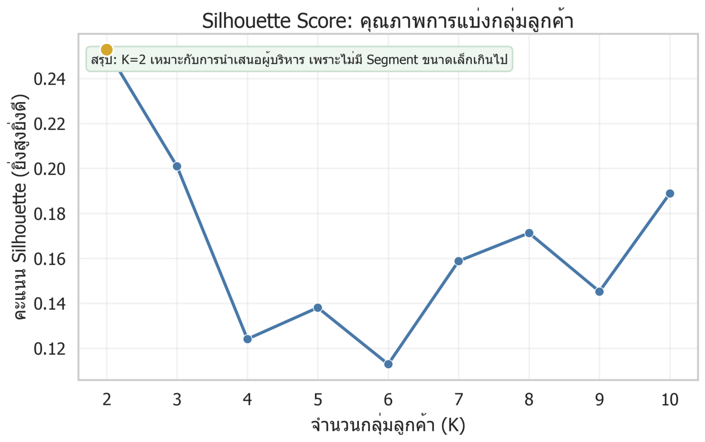
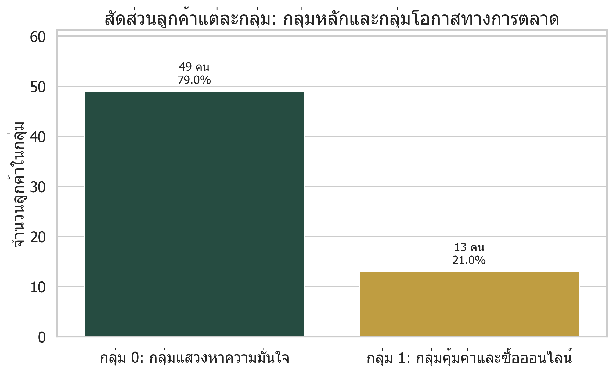
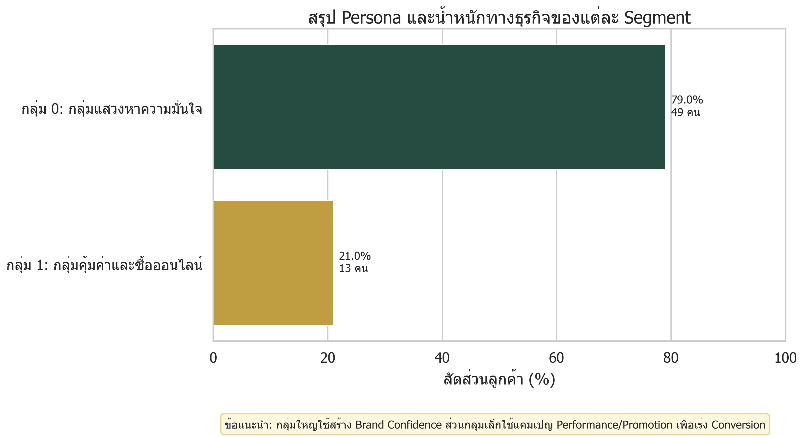
Business Insight
ใช้ Supervised ML เพื่อคัดกลุ่มที่มีโอกาสสนใจ และใช้ Unsupervised ML เพื่อเลือกข้อความกับช่องทางให้เหมาะกับ persona
ข้อมูลกลุ่มเป้าหมายจากแบบสอบถาม DeeAsh
ข้อมูลแบรนด์และปัจจัยที่ผู้ใช้ให้ความสำคัญ
ผู้ใช้แบรนด์ในกลุ่มตัวอย่าง
คำแนะนำเชิงกลยุทธ์จากการวิเคราะห์ข้อมูล DeeAsh
เน้น before/after, ความพร้อมก่อนออกงาน, social proof และรีวิวที่ลดความกังวลเรื่องกลิ่นหรือประสบการณ์ใช้งาน
ใช้โปรโมชัน bundle, coupon, cost-per-use และคอนเทนต์เปรียบเทียบราคาใน TikTok Shop และ Shopee/Lazada
ดู CTR เพื่อวัด message fit, add-to-cart เพื่อวัด buying context และ conversion เพื่อยืนยัน persona hypothesis